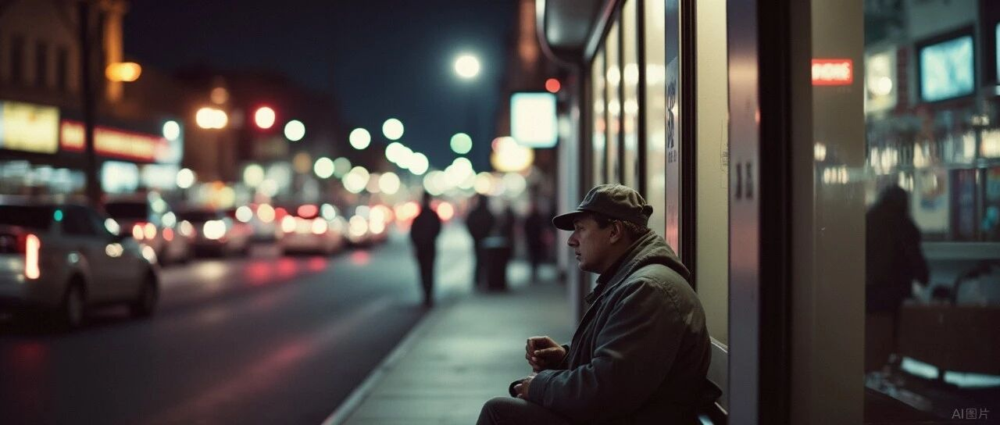

退休后，每月3000块生活费的日常
原创
秋秋
秋秋
秋秋在分享
2026年05月04日 11:01
云南
在小说阅读器读本章
去阅读
在小说阅读器中沉浸阅读
点击关注
秋秋在分享
一起实现财务自由退休
大家好，我是秋秋呀。
我们一家三口已经旅居一年了，算了下每月花销一万多，包括吃饭住宿买衣服等，
人均才3000多块钱。
很多人觉得3000多块过不了舒服日子，不能住好的酒店、不能想吃什么就吃什么，其实不是这样的，一年里我们有不到一半时间住酒店度假，花费2万左右。一半时间租房子，房租每月1500～6000，剩下的完全够一个月生活开销。
这样规划得当，日子是过得有滋有味，没有刻意省钱，也不觉得拮据。
具体说我们一家花销之前，
先讲我一个人FIRE时候的开销吧，也给单身人士点参考。
我上班时每个月花1万多，所以按照每月1万利息存钱的，退休后每个月开销大概在6000～7000块钱。
其中最主要的开销是北京的房租，一个月3000多。
我一开始住在西二旗附近，交通便利但距离市中心远，后来搬到北二环，人均房租4000多，但周围有公园有大学、有动物园有国家图书馆，很多免费的资源。房租虽然占我开销一半，但在北京得到的东西也很多。
最重要的是离开北京再看，6000～8000块每月才能租60平的老房子，现在到哪都觉得都很幸福了！
(在北京的家)
在北京每个月吃饭日用品大概2000，剩下1000多就用来满足我的各种爱好了，学化妆、学摄影、旅行、买买买等。
你们可别觉得这6000～7000块钱不够花，说真的，这笔钱不上班的情况下完全能把日子过得妥妥帖帖，甚至还有富余。
拿吃饭来说，我一个人也不讲究排场，只求简单，一天下来50块钱就足够
。早餐一杯咖啡、煮个鸡蛋玉米算5块钱，午餐吃两个家常菜、喝点粥15块钱，晚上买点水果或喝个奶茶10块钱，周末出去吃顿好的人均不到100块钱。
每个季度我还都会出去旅行，一般选择住青旅，一是安全，二是还能认识来自天南海北的朋友。我那时候住的青旅一晚也就20-60块钱，大多是四人间、八人间，设施虽然简单，但也都干净整洁，而且淡季的时候人很少，经常住不满。
我有很多朋友，都是在青年旅舍碰到的。现在想起来真的不可思议，大家来自不同的城市，有着不同的职业和经历，却能因为一场旅行聚在一起，一起打牌、玩狼人杀，拼车逛当地的景点，分享各自的故事，那种轻松的氛围，我也很怀念。
一个人FIRE可以独自旅行，像我去了新疆、西双版纳、三亚、延吉长白山……
15天旅程的总费用大概在3000～5000元
，除去来回机票1500块左右，剩下吃饭、住宿真的花不了多少，尤其淡季出的，还可以慢慢逛。
如果不出去玩，我会在北京当地骑车、逛公园，去社区上免费的课程、参加公益活动，偶尔还去附近的寺庙道观玩，那里大多包吃包住。
北京有很多免费的资源，只要愿意去发现，就能找到很多不花钱也能收获快乐的方式，日子过得很充实。
其中我最喜欢的就是骑车和摄影了，这两个爱好陪我度过了很多惬意的时光。每天下午，只要天气好，我就会沿着二环往天安门方向骑车，穿过一条条胡同，经过故宫、北海公园、什刹海这些地方，累了就找一家屋顶咖啡馆坐下点一杯咖啡，看着远处的风景，放空自己，北京的秋天超级美，看着枫叶和行人，那种感觉真的太舒服了。
我还会拿着相机记录一年四季公园不同的花草
，春天去拍郁金香，夏天去拍荷花，秋天去拍银杏，冬天去拍雪景，在拍摄的过程中，不仅记录了美景，也是在和自己相处，我不觉得孤单也是这样，就是一个人我感觉也有事可做。
我们社区还有很多免费的兴趣课，步行几分钟就能到，书法、钢琴、绘画都有专业的老师授课，虽然一起上课的“同学”大多是真正退休的叔叔阿姨，但他们都特别热心，很乐意分享自己的经验和生活趣事，比如我问毛笔哪里买的，就直接把手机拿给我让我看购买记录，和他们在一起相处也很开心。
现在回想起来，
我一个人FIRE的时候，确实没什么大的开支，
生活很纯粹，唯一的一笔“大额”支出还是办了一张游乐园年卡，不过我都把环球影城当散步的地方，算下来也不亏。
和FIRE后的轻松自在相比，我上班的时候花销就多了，一个月一万都打不住。
一是买衣服、护肤品多，还在意品牌。比如衣服，上班的时候讲究穿搭，每次换季不能说把衣柜全换一遍，买新的外套、牛仔裤、毛衣、短袖，1000块钱也差不多；护肤品也是，那时候经常加班，就总想用点好的产品，觉得工作已经很累了，就应该在其他方面对自己好一点。
二是我上班的时候只能趁着节假日出去玩、花费就高。像五一、十一这些节假日出去游玩，机票酒店价格都会涨，有时候花了钱却因为人太多，游玩体验也不那么好。但如果不出去玩，又觉得每天辛苦上班，连一点放松的时间都没有，对不起自己，所以每次节假日都会忍不住出去。
不知不觉，五一就把上半年娱乐的钱花得差不多了，十一又把下半年娱乐开支钱花光了，平摊下来，每个月没有大开支，但是每次出去玩都是一笔不小的开销。
现在不一样了，不上班之后我的消费观念变了很多，穿的最多的就是睡衣和家居服
，外出见人，准备夏秋两套像样的衣服就够了。我现在旅居带的衣服一共20件，有时间我要好好写写我极简又舒服的穿搭心得。护肤品也是，有一套基础的就行，平时好好睡觉多运动，皮肤状态反而比上班的时候更好，甚至连头发都变多了。
出去玩更是，旺季1500一晚的酒店我们淡季500块就能订到，今年冬天在三亚住了一个月五星酒店花费才1万多块钱。
一家三口FIRE后，日子过得比以前更简单了，
甚至和我一个人FIRE对比，花销还更少了。
像大老王虽不算完全意义上的FIRE，他无所谓靠利息生活，只要一家人平安幸福，钱够花就好。不够他会说：那我去上班好了。但实际上，我们三个人旅居这一年的花销，一个月一万多足够，比很多人想象的少很多。
最大的开销是住宿，我们现在5000多就能租一套带院子的别墅，有快400平6 个房间，还在大理这种四季如春气候环境超级好的地方。如果我们去小城市生活，开销还会更低。
去年夏天我们就是在威海住了半年多（5月-12月），1500块钱租了一个两室，崭新明亮，小区里还有儿童乐园，到沙滩商业街都1.5公里左右。所以离开北京，住宿反而没增加。
对比我一个人FIRE的时候，租一间屋子就要3000多块钱，离开北京人均下来比之前还要少。
我感觉你用大城市+上班情况算开销，会比真正FIRE多一些。
至于酒店，分两种情况。如果三四天换一个城市我们就住连锁酒店，华住会旗下和亚朵住的比较多，淡季大概200～300一晚，有早餐、距离景点近方便我们游玩，金卡会员还有机会升级套房。
如果度假我们就会住五星酒店，万豪住的比较多，白金卡有早饭和行政酒廊，酒店内一般就有儿童乐园和私家园林沙滩。
像今年冬天我们在三亚海棠湾住了一个月五星酒店，住宿花费才1万多块钱，算下来一晚也就400多一晚，比旺季便宜一半还多。
很多酒店我会趁活动囤一下。比如理文索菲特，园区里就有小火车，儿童乐园里还有赛车场，宝宝玩的特别开心。熹棠费尔蒙，酒店露台就有大浴缸，孩子能在里面嬉水，傍晚还能看海南黎族火把和打铁花表演、非常震撼，酒店还有高尔夫球场和好几个游泳池，600多一日三餐非常值。
万达嘉华更是才300多一晚，
我们住了20天一楼带泳池的房间，
好惬意，
儿童乐园里小朋友还有人照看。
跨年的时候我们去的博鳌海景套房，酒店有新年活动，晚上在露台上看海上烟花秀，特别有度假的感觉。
虽然住酒店开销会多一点，但是省去了吃饭打扫和外出游玩花销，淡季价格也都在500左右，也完全符合我们一家三口的开销计划，
五星酒店看似奢侈，但错峰出行，就能花小钱享受到高品质的体验，这也是FIRE后才能感受到的。
说完住宿，我们第二大开销就是吃饭了。
以前我一个人，一天50块钱吃饭足够了，现在一家三口，还要准备孩子爱吃的辅食和零食，开销自然会多一点。
像酒店一般包含早饭，我们下午就会吃顿特色菜，一大桌子也就100左右，这种大餐也不是天天吃，加上宝宝每个月奶粉一桶300块钱、尿不湿300块钱，一个月差不多3000块钱。
租房做饭的话开销也差不多，小城市物价便宜，一碗面条8块钱左右，对比北京18块还不到一半。
早饭我们一家人还是鸡蛋玉米白粥为主，算15块钱。午晚饭我们现在是吃食堂，荤菜4块钱一份、素菜2块钱一份，一家人两荤两素15块钱就足够，外加每日水果10块，宝宝零食酸奶等10块钱，每个月再外出吃顿好的，2000就够了。再加上宝宝奶粉尿不湿玩具衣服1000块，也是3000左右。
我们在外面玩的时候，不太给孩子买衣服玩具。
一是酒店和外面玩的就很多，二是也不好携带，衣服因为不用过冬，春夏的衣服好带也花不了太多钱。
剩下的就是我和大老王的个人开销了，这个我也没特别计算，比如我喜欢买黄金大老王也支持就会买很多。如果是固定开销，像护肤品，我最近半年用了一套是200多块钱，衣服我基础穿搭都没有再买过，只是到不同城市会买个100多块钱的旅游穿搭，便宜还好看。
最近一年基础款的衣服整理了下，才22件。
老王是护肤品也没有，所以每个人每月除去吃喝住，1000块零花钱够了，
因为我们旅行就很有新鲜感所以买东西啥的会变少。
另外，我们车子每个月充电20块-500块左右，全家人医保一年2000多。
说完这些，你觉得一家三口FIRE，10000元够花吗？
我们家的情况是：差不多。
我们过的也很开心，去不同的城市体验不同的生活，每天吃的饱穿的暖心情也很好。
和我上班的时候比，一家三口的开销=我之前一个人的花销。
我感觉主要是房租和吃喝的性价比变高了，北京的房租等于小城市酒店包月价格了，更别说是其他地方租房三分之一。
还有就是我少买东西，像包包首饰这种。
不过我也感谢之前“虚荣奢侈”的自己，要不是年轻的时候体验过了，现在也不可能祛魅。
(最近一年只带了这几样"大牌"）
总之，每个阶段我的爱好不同，但是都喜欢
轻松自在，内心充实。
以上我的支出，也没有准确记录，只是大概，有多有少，不能按照每天五星酒店算，也不能按照每天小城市开销算。只是整体利息覆盖支出，我就OK了
。
毕竟我们现在一个人的钱就能FIRE，完全可持续的。至于未来～孩子大了，我们老了，就记录着吧～
我给我们和孩子也专门做了养老教育股息账户，现在每年有5%的分红，到孩子成年了我们老了里面估计有两百万，也就没那么担心了：
给自己准备的养老股账户如下：
其实，FIRE的开销是因人而异。
一个人自由随性，也要承担吃饭游玩的“孤独感”，我当时就很想让老王陪我玩。
一家三口闹哄哄的，也有分享的喜悦。
没有哪种生活是完美的，但是哪种生活你都可以获得幸福。
现在这样，就是我喜欢的生活，也是我一直坚持过我想要的日子。
希望我们都能财务自由、提前退休。
这个系列我也会一直连载的
，希望对你有帮助。